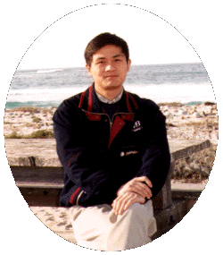

他山之石
If I have seen further it is by standing on the shoulders of giants.
—Isaac Newton
Terence Tao

中文名：陶哲轩。世界著名数学家，美籍华人，2006年获得数学界最高奖项：Fields 奖，因与英国数学家 Ben Green 合作证明了存在任意长度的素数等差数列
。现任教于UCLA。
Tao 的主要研究领域为实分析，调和分析，泛函分析，数论。并著有 Analysis, Introduction to measure theory 等著作。
Tao的个人主页(内部链接多被GFW屏蔽)
Grigori Perelman

Perelman, 俄文原名：Григорий Яковлевич Перельман。 2006年与Tao同时获得Fields奖，但是他拒绝接受该奖。获奖原因：在OA系统 Arxiv上发表3篇文章，解决了彭加莱猜想(Poincaré conjecture)。Perelman 拒绝接受Fields的原因是他在证明过程中使用了另一个美国数学家Hamilton提出的一个理论工具：Ricci flow(里奇流)。不管怎样，Perelman 无疑引起了数学界的轩然大波，无论是他的证明还是他的品德！他的主要研究领域是拓扑学，尤其是世界上数一数二的Ricci flow 专家。他是天才，更是圣人！很多人说Perelman 不如Tao, 我看未必。更何况他们完全是两种不同类型的人，不具有太大的可比性。如果真要比较的话，可以从国际奥数的成绩来看：Perelman 曾经在国际奥数上获得过满分（自然也就是第一名）！而Tao三次参加，最好的成绩也只有第16名(Well, almost)。Perelman目前住在莫斯科，和他母亲在一起，靠着他母亲的退休金生活，因为Perelman本人目前处于失业状态。而且遗憾的是，俄罗斯政府似乎也不关心这件事情。根据目前的情况来看，目前40岁的Perelman，应该还未成家，而且恐怕以后也不会成家了。Wikipedia主条目：Grigori Perelman。
Donald Knuth

中文名，高德纳。世界著名计算机科学家，算法巨著：The Art of Computer Programming (TAOCP)的作者。TAOCP共包含7卷，目前Knuth只完成了其中的4卷，且他目前已经从Standford University退休，为了集中全部精力来完成这一史诗般的算法巨著。Knuth也因该书获得了计算机科学领域的最高奖项:ACM Turing 奖，也是目前唯一仅通过写书就获得该奖的人。Knuth的中文名是美籍华人计算机科学家姚期智的夫人在Knuth第一次访华前所起的。姚期智本人也曾获得Turing 奖。在20世纪80年代初，TAOCP一书的铅字排版技术的印刷效果让Knuth感到失望。Knuth于是决定自己动手，设计一个计算机排版系统:TEX。从最初的构想，到最后的完整实现，一共花了Knuth 将近10年时间来开发和完善TEX。最终，Knuth对自己设计的排版系统所排版出来的TAOCP非常满意。此外，设计TEX的同时，Knuth还设计了很多计算机字体(Computer Modern), 以及用于造字的程序和语言：MetaFont。正如TAOCP的书名所指的那样，Knuth是一个将理论、技术和艺术融为一体的独一无二的巨匠。Knuth 在Standford 大学的个人主页
Leslie Lamport

Lamport 有感于Knuth所开发的排版系统TEX 对于非专业人员来说太难以掌握，于是Lamport着手在TEX基础之上设计一个比较容易学习的用户接口：LATEX 。实际上LATEX 并不是一个独立的排版系统，而是在TEX 的基础上写了一大堆的现成的代码(宏，Macro)来定义一些比较标准的用法格式(技术上称为format, 并以.fmt格式的文件存为内存映像，需要的时候直接导入内存)。Lamport 目前任职于微软研究院(Microsoft Research, MSR)。2014年4月，Lamport被ACM协会授予2013年度Turing奖，以表彰他在时钟等算法方面的贡献。Lamport 个人主页
卢昌海
卢昌海, 美籍华人，现居于美国纽约。著名科普作家，网页设计师，发表《黎曼猜想漫谈》，《寻找太阳系的疆界》等众多高质量中文科普作品。卢原为杭州人，本科就读于复旦大学物理系，后赴美国哥伦比亚大学攻读物理学博士学位, 博士毕业后改行做网页设计和科普。卢昌海的个人主页是中文科学类网站的佼佼者之一，十年来虽然几经变化，但其主导风格却始终如一，一直以高级科普为主题。2008年改版至今，点击量为9,253,946次(截至2014/04/27)，每天平均点击量为7千，在中文同类网站中名列前茅。发表于主页上的文章都受到不同程度的好评。关于他为什么转行，以下一段文字摘自个人主页的一段日记：
自从暑假以来， 我对于自己未来的打算已经发生了很大的变化。 几年前我从未想到会有可能发生这种变化。 我曾经那样坚决地要以物理学研究为职业， 仿佛自己的生命因为这一选择才变得有了意义。 可是现在我却越来越觉得也许自己应当选择一个别的职业。
我坐在自学教室中， 闭上眼睛， 让思绪静静地飘荡在时间长河中， 让心灵追溯着自己思想的轨迹。 我觉得， 这与其说是一种思想的转变， 不如说是我重新发现了自己的性格， 发现了自己性格中一直静默， 但却确凿无疑地存在着的一面： 我是那样的珍视自由的、 无拘无束的思维， 我强烈地排斥一切强加在我思维上的束缚。 我渐渐地发现如果我选择研究院作为自己的归宿， 这种压力就将伴随我一生。 我将不得不象一台机器那样不断地发表文章。 随着时间的推移， 我越来越清楚地意识到这是一种阴暗的前景。 原因只有一个： 我喜爱物理是因为喜爱物理学中的大胆创见和理性之光， 我愿意思考那些最基础的问题。 但我失望地发现， 对那些本应该是物理学之本的基础问题的探索已经变成了一种点缀。 今天的物理学家们感兴趣的是具体的东西， 比如在重整化的框架下作复杂的计算。 具体的计算自然是物理学的主题之一， 但在一种情况下我不愿意从事这种计算， 那就是当计算所依据的基础在我看来是错误的时候。 不幸的是， 高能物理 - 我曾将之视为自己未来的职业 - 的情况在我看来正是如此。 物理学家们没有搞清楚理论的基础， 却一味地埋头计算， 甚至几乎不再有人对基础问题感兴趣， 这让我觉得很伤心。 现代物理的基础问题是很难在少数人手中得到解决的， 当所有人都远离时我一个人又能有什么作为呢？ 我喜欢物理， 不是喜欢任意的计算。 要想发表文章就得紧跟潮流， 但这却反而离开了我的兴趣， 这正是使我考虑放弃以物理作为职业的原因。 只有当我不必受发表文章的压力所左右时， 我才能自由自在地思考自己感兴趣的东西。 我终于明白了为什么 Einstein 喜爱看守灯塔的职业， 因为那样他可以在自己的心灵中建立一片宁静而自由的天空。